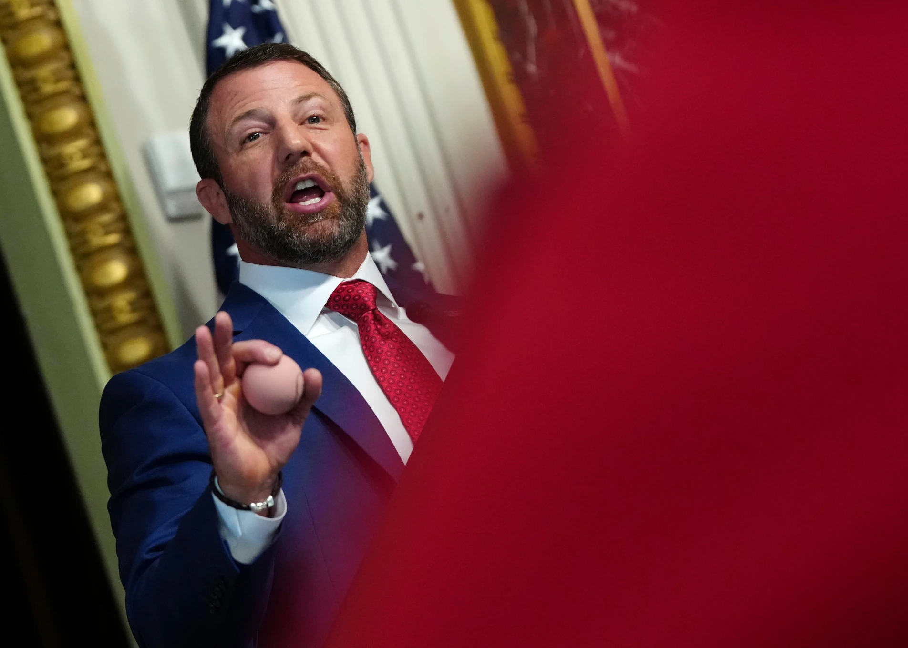

Monday, June 29, 2026
LIVE 3hrs ago
President Donald Trump used a primetime address to the nation Thursday to elevate his yearslong push to raise doubts about the legitimacy of U.S. elections and dispute his 2020 loss in an appeal for more restrictive voting laws ahead of the midterms.


WASHINGTON — Homeland Security Secretary Markwayne Mullin warned Friday that state officials could lose funding or be investigated if they don’t comply with President Donald Trump’s demands for election security, part of the Republican president’s long-running effort to undermine confidence in the vote.
The threats, made only months before midterm elections that will determine who controls Congress, are likely to be hollow, experts said, because Trump’s plans to change voting have been stymied by judges and the Constitution provides states autonomy over how elections are administered.
Still, Mullin’s comments, made Tuesday from the White House complex a day after Trump’s primetime address on the matter, might sow more uncertainty about voting processes and cause issues for states as they prepare for November.
“We can absolutely build confidence in the American people but the states have to do their part,” Mullin added.
Trump continues to falsely claim Democrat Joe Biden won only because of fraud in 2020, and he’s tried to marshal the powers of the federal government to rewrite that history since he returned to office last year — even as judges and his own attorney general in his first term concluded the election was legitimate.
“He could definitely do it at this point,” Mullin said the president wasn’t re- litigating the 2020 election.
It’s just about shedding light on what happened and making sure it’s not repeated,” he said.
Mullin’s assertions about noncitizen voting are based on insufficient data In his remarks, Mullin also pushed an unfounded assertion Trump made Thursday that the federal government had uncovered 250,000 noncitizen voters on the lists in California, Nevada, New Jersey and Pennsylvania. The study by the Department of Homeland Security was based on public data, which election experts say is not detailed or updated enough to correctly identify if a registered voter is a noncitizen, he said.
Election officials in California and Pennsylvania said they will investigate the results from the Trump administration but stressed they do their own voter list maintenance and that noncitizen voting is very unusual. The discovery has been supported by research.
Democrat California Gov. Gavin Newsom responded to Mullin’s threats with a social media post.
“California has free, fair and secure elections and we’re going to fight for them,” he added. “Try us out.
In Nevada, Secretary of State Cisco Aguilar, a Democrat, likewise stated he had confidence in the integrity of the state’s voter file.
“We’re always looking at the data to see how many registered voters in Nevada don’t have a Social Security number on file,” he added. “We've done a lot of work to make sure our voter rolls are as clean as we can.”
Mullin also committed to closely check public voter lists for situations of possible voter fraud before and after the 2026 election.
"If you are an illegal or you are voting illegally, we will hunt you down, we will find you and we will prosecute you," he stated.
He called on states to join DHS’ newly revised SAVE program, a federal tool at the heart of the Trump administration’s push to nationalize elections. Since the Trump administration greatly increased its search capability in April 2025, at least 25 states have used it to examine their voter rolls. To completely audit their voter lists, states have to send their sensitive voter data to the program.
State officials who don’t engage in SAVE might be fined, penalized or imprisoned, Mullin warned.
But a federal judge recently blocked the use of the revamped program amid concerns about privacy and unjustified purges of eligible voters. The lawsuit involved voters who were improperly detected by the technology, putting their spot on the rolls in temporary jeopardy.
“Empty threats,” said David Becker, executive director of the nonprofit Center for Election Innovation and Research.
“Every court to consider the DOJ’s demands — 15 of them so far, six of those judges appointed by President Trump — has found that the federal government cannot lawfully demand access to states’ sensitive voter data,” he said. “What he's proposing is against the law.”
Trump’s push to enact the SAVE Act, federal legislation requiring evidence of citizenship to register to vote, is also stuck in the Senate. Republicans don't have the votes to modify the filibuster rules and pass it without Democratic backing.
Cybersecurity help for election officials has waned in Trump’s second term Mullin also echoed Trump’s worries about electronic voting system vulnerabilities that election experts have long said exist. Trump on Thursday indicated the concerns open the door to “rig” the result, but election officials say there are many measures in place to prevent that: physical security, voting machine checks, postelection reviews and paper ballot backups in most of the country.
If they choose to engage in SAVE, Mullin said, the nation’s Cybersecurity and Infrastructure Security Agency, which is under DHS, will give election officials an updated electoral infrastructure plan within 30 days and cyber threat resources to address the concerns.
But Trump has all but gutted the agency’s election security division.
CISA largely stepped back from its traditional role of assisting states with last year’s elections after the Trump administration conducted a review of its election work, placed more than a dozen election-focused staffers on administrative leave, and cut $10 million from two cybersecurity initiatives, including one dedicated to helping state and local election officials. The agency also remains without a Senate-confirmed director, rotating through a number of acting directors.
Aguilar said his state has stepped up and would defend its own elections in the absence of federal help.
“The fact that they think they’re going to come in before the general election in November and give us infrastructure, that’s nuts,” he remarked. “Spoken words are not the same as actions and in their case it’s been all talk.